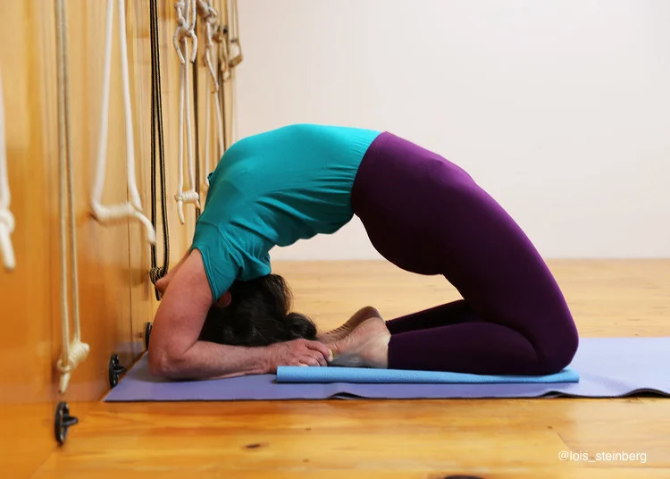

📖 Origin & Evolution
Iyengar Yoga was developed by B.K.S. Iyengar in the 20th century.
It emphasizes precision, alignment, and the use of props such as belts, blocks, and ropes to help practitioners achieve the correct posture safely.
This approach makes yoga accessible to people of all ages and abilities, promoting strength, flexibility, and therapeutic benefits.
💡 Did You Know?
🪑 Iyengar Yoga often uses chairs, blocks, straps, and blankets for support.
🧘♀️ It focuses on holding poses longer to deepen awareness and stability.
🌍 Iyengar Yoga has influenced modern yoga therapy worldwide.
📚 B.K.S. Iyengar’s book "Light on Yoga" is considered the Bible of modern yoga.
🔮 Core Practices of Iyengar Yoga
Props – Tools like blocks & straps ensure safe and correct alignment.
Alignment – Each pose is adjusted to the individual body structure.
Holding Asanas – Postures are held for extended periods for deeper benefits.
Therapeutic Yoga – Helpful for injuries, chronic pain, and rehabilitation.
Breath Control – Pranayama is integrated with precise posture work.
Mind-Body Awareness – Enhances focus, patience, and discipline.
🎯 Quick Quiz:
What makes Iyengar Yoga unique?